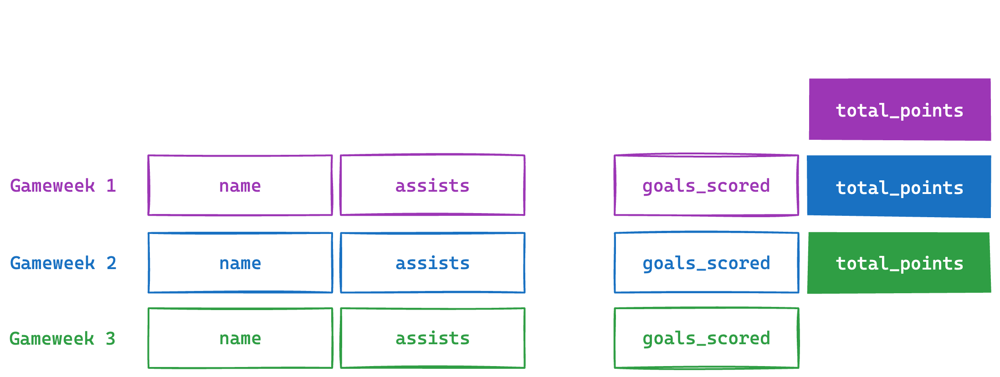

Teaching learning machines football pt.2
Getting our data in shape and finding our feet with features: deciding what training data we want to train our model on
See the accompanying Github repo here and the previous blog post here.
This is the second post in a series of me stumbling through my machine learning journey, using the medium of Fantasy Premier League.
In the last post, we ran through the set-up we’ll use to train a machine learning model on FPL data. We‚Äôre using Vaastav‚Äôs Github repo for the raw data; a leading AutoML library called AutoGluon for the models; and a free Google Colab notebook for the compute needed for training.
Using the get_training_data function, we’ve already downloaded per-gameweek stats from previous seasons for each player, as a starting point for our training data.
This time, we’re going to be playing kick-about with our mystic ball to figure out features: the footballing stats we think offer the most predictive power.
 
 
 
What do we mean by training data?
As with any supervised learning task in ML, we’ll be splitting the available data we have into two parts: training data and test data.
Training data, as you may have guessed, is the data we use to train our machine learning model. We provide this with the true values we want the model to predict, called the label (total_points in our case), so it learns the relationship between the results and the data. If things go well, it learns to output those same results from the features during training.
In simpler terms, we give the model the training data with the answers, like a marked practice exam, to teach it how to work them out.
Test data, on the other hand, is the data we use once the model has been trained, to see how well it works. We get the model to predict total_points for each of the players per-gameweek in the test data, without giving it the answers, to see how accurate it is compared to the true total_points.
Using the same analogy, test data is like a new exam it’s never seen before, without any answers, which we use to see how well it has learned.
Our aim is to predict the number of FPL points that each player will get in the gameweek ahead, which means that total_points is our label: the true result we’ll compare the model’s output against.
 
 
 
A recap on our raw gameweek-level data
Once we run the get_training_data function from the previous post, we get structured gameweek-level data in a single Pandas dataframe.
If we specify our training data to mean the four seasons from 2019-20 to 2022-23, the output table looks something like this:
name assists bonus bps clean_sheets creativity element fixture goals_conceded goals_scored ...
0 Aaron_Cresswell_376 0 0 7 0 1.5 376 8 5 0 ...
1 Aaron_Lennon_430 0 0 3 0 0.0 430 3 0 0 ...
2 Aaron_Mooy_516 0 0 0 0 0.0 516 7 0 0 ...
3 Aaron_Ramsdale_494 0 0 11 0 0.0 494 2 1 0 ...
4 Aaron_Wan-Bissaka_122 0 2 34 1 16.1 122 9 0 0 ...
... ... ... ... .. ... ... ... ... ... ... ...
92868 Oliver Skipp 0 0 16 0 0.0 441 377 1 0 ...
92869 Ryan Sessegnon 0 0 0 0 0.0 436 377 0 0 ...
92870 Ashley Young 0 0 0 0 0.0 538 372 0 0 ...
92871 Jeremy Sarmiento Morante 0 0 0 0 0.0 119 372 0 0 ...
92872 Philip Billing 0 0 15 0 0.0 70 376 1 0 ...
[92873 rows x 42 columns]
As you can see, it’s a fairly big table with ~93,000 rows and 42 columns.
 
 
 
Getting our training data into shape üîªüîπüî∫üî∏
While we have the beginnings of data to train our model on, let’s take a leaf from Pep’s book and make sure it’s in shape before starting.
Our training data needs to have all the information the model can use to make a prediction, called our features, sitting on the same row as the answer we want the model to get to, called our label.
Shifting the label back by a week to avoid data leakage
In the table above, the stats that each player achieved every gameweek, sit on the same row as that player’s total_points for that same gameweek.
That’s not very helpful, as we want to predict the next gameweek’s total_points before the next gameweek actually starts.
   
As with any machine learning task, we have to make sure we only train the model on data it would have available at the point of making a prediction in the real world, to prevent what is known as data leakage.
For this model, the latest data it would have in real world settings, is data from the gameweek before.
To reflect this, we’ll shift our label, total_points, up by 1 week.
  
The shift() function in Pandas does exactly this and shifts a column up or down by a value.
The 42 raw stats from FPL we can create our features from
Going back to the table, each of the columns corresponds to a variable you might recognise from Fantasy Premier League:
['name', # the name of the football player
'assists', # the number of assists they got that gameweek
'bonus', # the number of bonus points they got that gameweek
'bps', # the underlying stat used to calculate bonus points
'clean_sheets', # the number of assists they got that gameweek
'creativity', # the number of assists they got that gameweek
'element', # their unique id as a player
'fixture', # the id of the fixture
'goals_conceded', # the number of goals their team conceded that gameweek
'goals_scored', # the number of goals they scored
'ict_index', # FPL's own index combining influence, creativity and threat
'influence', # FPL's own influence measure
'kickoff_time', # Kick-off time
'minutes', # Number of minutes played by this player this gameweek
'opponent_team', # Who the opponent team was this gameweek
'own_goals', # Number of own goals scored by this player this gameweek
'penalties_missed', # Number of penalties missed by this player this gameweek
'penalties_saved', # Number of penalties saved by this player this gameweek
'red_cards', # Whether this player got a redcard this gameweek
'round', # Gameweek number, within the season
'saves', # Number of saves by this player this gameweek
'selected', # Number of FPL players who selected this player this gameweek
'team_a_score', # Away team's goal tally for this game
'team_h_score', # Home team's goal tally for this game
'threat', # FPL's own threat measure
'total_points', # Total number of FPL points this player got this gameweek
'transfers_balance', # The number of transfers in, versus transfers out, this gameweek
'transfers_in', # The number of FPL players that transferred this player into their team, this gameweek
'transfers_out', # The number of FPL players that transferred this player out of their team, this gameweek
'value', # The FPL value (in £millions) of this player this gameweek
'was_home', # Whether this player was playing this match at home
'yellow_cards', # The number of yellow cards received by this player this gameweek
'opponent', # Who the opposing team was
'season', # The Premier League season
'position', # What position the player plays in, as per FPL
'team', # The player's team
'xP', # The expected FPL points for this player as predicted by the Fantasy Premier League's own algorithm
'expected_assists', # The expected assists accrued by the player this gameweek
'expected_goal_involvements', # The expected goal involvements for the player this gameweek
'expected_goals', # The expected goals conceded accrued by the player this gameweek
'expected_goals_conceded', # The expected goals conceded accrued by the player's team this gameweek
'starts'] # The number of starts by this player this gameweek
This might already look like a hefty list, but we want to start off broad and give our model more than one gameweek’s worth of data, as that makes it impossible to tell how any player is doing in terms of recent form.
We’ll do this by:
- Taking a subset of the above list, and including the previous gameweek’s raw stats without transforming them.
- Using that same subset of columns to calculate more features, which might give our model a sense of how players or their teams are performing over time.
Deciding which columns we’ll transform into features
Let’s start by splitting our starting line-up of stats into two lists:
The first is called STANDARD_FEATURES and has all of the columns we want to drop or ignore during training, as either I don’t think they have predictive value, or they run the risk of data leakage.
The second list is called LAST_N_FEATURES and represents all of the raw features we’ll be transforming into our training data:
# Features we won't include
STANDARD_FEATURES = ['name', 'position', 'team', 'opponent_team',
'round', 'total_points', 'season', 'xP']
# Features we want to transform into our eventual training data
LAST_N_FEATURES = ['assists', 'bonus', 'bps', 'clean_sheets', 'creativity',
'expected_assists', 'expected_goal_involvements', 'expected_goals',
'expected_goals_conceded', 'goals_conceded', 'goals_scored',
'influence', 'minutes', 'own_goals', 'penalties_missed',
'penalties_saved', 'red_cards', 'saves', 'selected', 'threat',
'total_points', 'transfers_balance', 'transfers_in', 'transfers_out',
'value', 'yellow_cards', 'xP', 'total_points']
Deciding on how we’ll transform the data
We now need to decide on an approach that gives us a reasonably broad set of features for our training data.
We can start by looking at the types of feature that are available to us. All of the features I’ve used fall into one of the four buckets below:
 
- RAW FEATURES: where the data is taken directly from the raw gameweek-level data, e.g. “the number of goals scored that gameweek.”
 
 
- MOVING AVERAGES: where we take a moving average from a consistent time window e.g. “the average number of goals from the past 3 gameweeks.”
 
 
- LAGGED FEATURES: where we take a value from a fixed timeframe in the past, e.g. “the number of goals scored from 1 gameweek ago.”
 
 
- OTHER STATISTICAL FEATURES: for example “the standard deviation of goals in the past 3 gameweeks.”
Starting assumptions for our features
As you can probably already tell, there’s a few assumptions I’ve gone with that have shaped my approach:
-
We want lagged raw stats for the previous few gameweeks (especially the last gameweek), as there’s probably something in there to do with momentum and form. If someone’s played amazingly in the last few gameweeks, they’re probably more likely to do so again.
-
Knowing how much a player’s performance varies, through the use of statistical measures such as mean and standard deviation, is also helpful to get an indication of consistency.
-
Lastly, while individual performance is important, it’s helpful context to know how their team has also performed, in terms of clean sheets, goals scored, and goals conceded. This also probably has a psychological impact on individual performance.
How do we know how useful each stat actually is for prediction?
You might already have some inklings yourself about how useful a few of the FPL stats above are. For example:
-
Transfers (both in or out) might be a great proxy for public “hunches” about players who are outperforming or underperforming their usual form, which isn’t always be obvious from the data.
-
On the flip side,
penalties_missedisn’t very indicative of relative form, as most players across most games wouldn’t even dream of taking a penalty, meaning this stat would be a desperately boring 0.
Luckily, there’s a scientific way to interpret exactly how much predictive power each feature has called permutation importance, which we’ll come to in the next post after we’ve trained our first model. (Yes, that’s probably the nerdiest hook you’ve ever read, but stay with me..)
 
 
 
Calculating our features at long last
If you’ve made it this far, you’ve either got too much time on your hands, or you’re not doing as well as you’d hoped in your friends’ FPL league and you’re trying to salvage what you can of the season to save face.
Either way, I’m grateful enough to let you know that it’s almost over.
We can finally produce our training data using the below function, called calculate_features, which transforms our chosen columns into our broader set of features I described above:
def calculate_features(all_data):
number_of_lags = 3 # Number of weeks for lag features
# Aggregate team-level metrics
team_performance = all_data.groupby(['team', 'season', 'round']).agg({
'goals_scored': 'sum',
'goals_conceded': 'sum',
'clean_sheets': 'sum',
}).reset_index()
# Rename the aggregated columns so they don't clash with the player-level features
team_performance = team_performance.rename(columns={
'goals_scored': 'team_goals_scored',
'goals_conceded': 'team_goals_conceded',
'clean_sheets': 'team_clean_sheets'
})
# Create lag features for team performance
for feature in ['team_goals_scored', 'team_goals_conceded', 'team_clean_sheets']:
for lag in range(1, number_of_lags + 1):
team_performance[f'{feature}_lag_{lag}'] = team_performance.groupby(['team', 'season'])[feature].shift(lag)
# Merge team performance with main data
all_data = pd.merge(all_data, team_performance, on=['team', 'season', 'round'], how='left')
logger.info(list(team_performance.columns))
logger.info(list(all_data.columns))
# Calculate moving averages and lag features for individual players
for feature in LAST_N_FEATURES:
# Create lag features for the last 3 weeks
for lag in range(1, number_of_lags + 1):
all_data[f'{feature}_lag_{lag}'] = all_data.groupby(['name', 'season'])[feature].shift(lag)
# Calculate mean and std dev of the last 3 weeks, lagged by 1 week
all_data[f'{feature}_mean_last_3_lag'] = all_data[[f'{feature}_lag_{lag}' for lag in range(1, number_of_lags + 1)]].mean(axis=1).shift(1)
all_data[f'{feature}_std_last_3_lag'] = all_data[[f'{feature}_lag_{lag}' for lag in range(1, number_of_lags + 1)]].std(axis=1).shift(1)
# Select the relevant columns
lag_feature_columns = [f'{feature}_lag_{lag}' for feature in LAST_N_FEATURES for lag in range(1, number_of_lags + 1)]
lag_stat_columns = [f'{feature}_mean_last_3_lag' for feature in LAST_N_FEATURES] + [f'{feature}_std_last_3_lag' for feature in LAST_N_FEATURES]
team_lag_feature_columns = [f'team_{feature}_lag_{lag}' for feature in ['goals_scored', 'goals_conceded', 'clean_sheets'] for lag in range(1, number_of_lags + 1)]
return all_data[STANDARD_FEATURES + lag_feature_columns + lag_stat_columns + team_lag_feature_columns]
training_data = calculate_features(all_data).reset_index(drop=True)
training_data.to_csv(f"training_data.csv")
 
Running this function gives us an updated dataframe (table) of training data, exported to a .csv, which looks something like this:
name position team opponent_team round total_points ... team_goals_conceded_lag_1 team_goals_conceded_lag_2 team_goals_conceded_lag_3 team_clean_sheets_lag_1 team_clean_sheets_lag_2 team_clean_sheets_lag_3
0 Aaron_Cresswell_376 NaN NaN 11 1 0 ... None None None None None None
1 Aaron_Lennon_430 NaN NaN 16 1 1 ... None None None None None None
2 Aaron_Mooy_516 NaN NaN 18 1 0 ... None None None None None None
3 Aaron_Ramsdale_494 NaN NaN 15 1 2 ... None None None None None None
4 Aaron_Wan-Bissaka_122 NaN NaN 6 1 8 ... None None None None None None
... ... ... ... ... ... ... ... ... ... ... ... ... ...
92868 Oliver Skipp MID Spurs 11 38 2 ... 33 22 0 0 0 11
92869 Ryan Sessegnon DEF Spurs 11 38 0 ... 33 22 0 0 0 11
92870 Ashley Young DEF Aston Villa 5 38 0 ... 11 11 11 2 2 0
92871 Jeremy Sarmiento Morante MID Brighton 2 38 0 ... 22 44 55 0 10 0
92872 Philip Billing MID Bournemouth 8 38 2 ... 11 22 33 0 0 0
[92873 rows x 157 columns]
Using the logic and approach we outlined above, we’ve almost quadrupled the number of columns to a comprehensive set of 157 features, and we now have some training data to train our model on!
(You may have spotted there’s a few NaN (meaning “not a number”) or None values above, but we’ll come onto cleaning the data in the next post.)
The rest of the season..
Next time, you’ll finally train ‚ú®my first machine learning model‚Ñ¢Ô∏è‚ú®. We’ll tweak our training data based on early results, before starting to think about hyperparameters and how they can affect the outcome.
ₕₒw ₑₓcᵢₜᵢₙg!